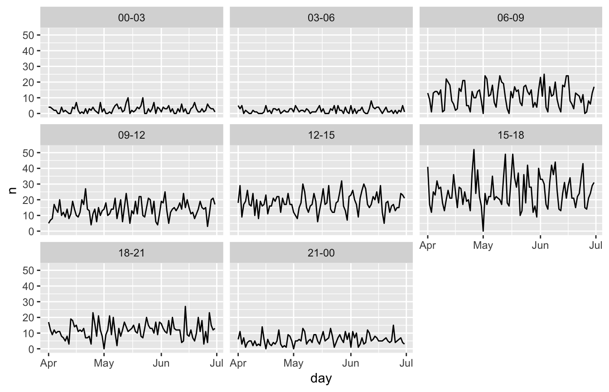
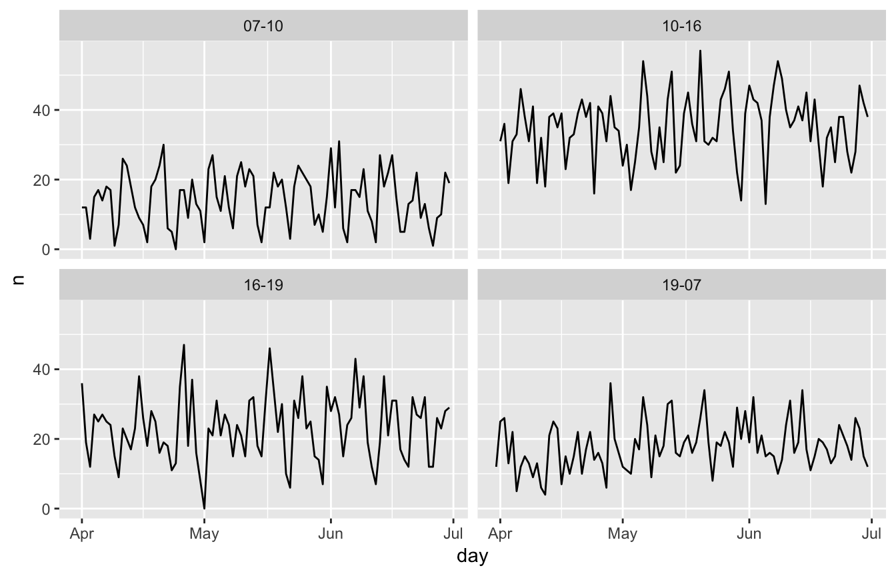

vignettes/padr_custom.Rmd
padr_custom.RmdThis vignette assumes the reader has read the Introduction to padr vignette. These functions are introduced in version 0.4.0 of the package and should be considered experimental for the moment.
thicken creates evenly spaced intervals to which observations can be aggregated. pad subsequently checks for missing observations and inserts records where needed. This procedure can be largely automated because of the assumption of an evenly spaced interval. However, the functions can’t deliver when asymmetry between the datetime points is desired. This might occur when observations are frequent during some moments, and sparse during others. For instance daily hours vs night periods, or working days vs weekends. We might want to perform a single analysis where the datetime spaces between observations are of different lengths.
Lets have a look at all the vehicle incidents in the emergency dataset. Say you want to monitor the trends of number of accidents in the second quarter of 2016. You choose a three hour interval to do the analysis.
library(padr); library(dplyr); library(ggplot2)
veh_acc <- emergency %>%
filter(title == "Traffic: VEHICLE ACCIDENT -",
lubridate::month(time_stamp) %in% 4:6)
veh_acc_line_plot <- function(padded_df,
units_to_last = NULL) {
padded_df %>%
fill_by_value() %>%
thicken("day", "day") %>%
mutate(interval = format_interval(day_hour, "%H", sep = "-" ,
units_to_last = units_to_last)) %>%
ggplot(aes(day, n)) +
facet_wrap(~interval) +
geom_line()
}
veh_acc %>%
thicken("3 hour", "day_hour") %>%
count(day_hour) %>%
pad() %>%
veh_acc_line_plot()
Accidents are more common around rush hours. During nightly hours there are hardly any accidents, and also in the daytime the number drops slightly. We would rather aggregate this to morning rush hour, day time, evening rush hour, and night time.
thicken’s internal work horse is a spanning function. It takes the datetime variable and spans a datetime variable of the desired interval around it. When you want your own asymmetric intervals, you have to build the spanning variable yourself. To help with that, the functions span_around and subset_span are provided. span_around is a wrapper around the internal span function. It will return a spanning with an evenly spaced interval. Of course you can also create this yourself. span_date and span_time are convenient wrappers around seq.Date and seq.POSIXt for manual spanning. Next, to create an asymmetrical spanning, apply subset_span on the evenly spaced span. Together with a list that describes the pattern of points that should be retained.
veh_acc_span <-
span_around(veh_acc$time_stamp, interval = "hour", start_shift = "7 hour") %>%
subset_span(list(hour = c(7, 10, 16, 19)))Note that the argument start_shift is used. This will add an extra time period before the first observation in the datetime variable. We do this to ensure that spanning is still fully around the datetime variable after subsetting. The argument end_shift is by default equal to start_shift. So we have set this to 7 hours as well in the example.
The thicken_cust and pad_cust functions both take the spanned object as an argument. thicken_cust will assign each observation to the closest value in the spanned object. Note that thicken_cust only does round down, whereas in the regular thicken there is also the option to round up. This seems the mostly chooses option in the regular thicken, the argument was omitted from thicken_cust for simplicity. pad_cust also needs the spanned object, because it can no longer infer which observations are lacking from the datetime variable. By default, pad_cust drops the last value in the spanned object. If the original spanning was around the datetime variable, leaving the last value in would create an empty record after all the observations.
veh_acc_cust <- veh_acc %>%
thicken_cust(spanned = veh_acc_span, colname = "day_hour") %>%
count(day_hour) %>%
pad_cust(veh_acc_span)Now we have our data aggregated to an asymmetric spanning, we can rebuild the plot.

And there we have it, we have aggregated and formatted our data to asymmetric intervals.